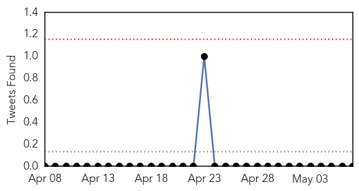
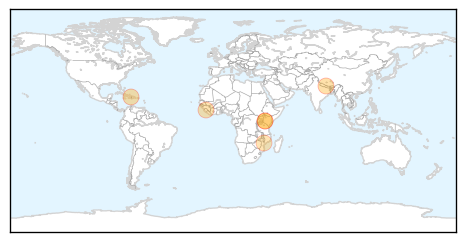
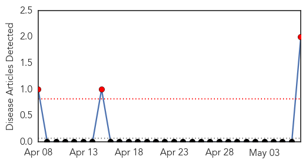
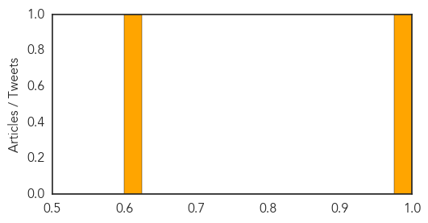

Cholera
30-Day Web Trend
0 alerts, 1 warnings

30-Day Twitter Trend
0 alerts, 0 warnings

Article Locations
Article Confidences

Top Articles:
- 0.997
- UN struggles to stem new rise in Haiti cholera cases
- 0.989
- Caution, containment and continued care
- 0.949
- Health staff join hands in the war on cholera - Kenya
- 0.939
- Kenya: Health staff join hands in the war on cholera
- 0.927
- Sierra Leone News: Poor hygiene responsible for disease burden-Dr. Brima Kargbo « Awoko Newspaper
- 0.887
- Cuba’s Effective and Cheap Cholera Vaccine
Top Tweets:
-
No tweets found for May 07, 2015
Mumps
30-Day Web Trend
3 alerts, 0 warnings

30-Day Twitter Trend
0 alerts, 0 warnings

Article Locations

Article Confidences
Top Articles:
Top Tweets:
-
No tweets found for May 07, 2015